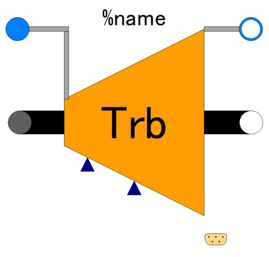
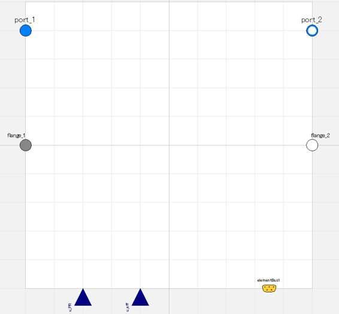
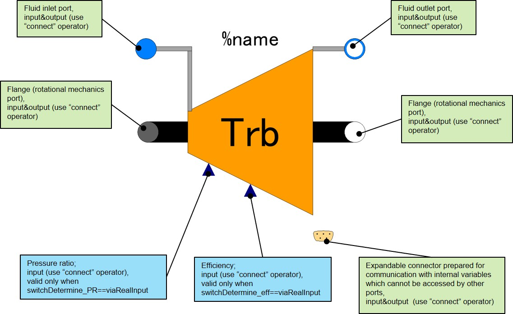
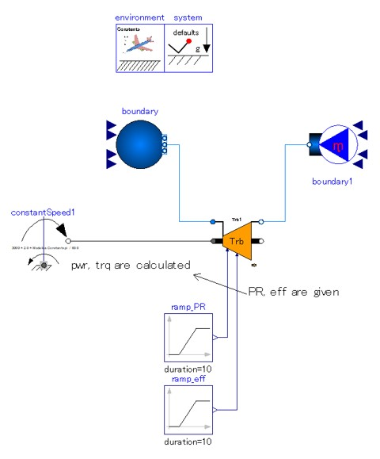
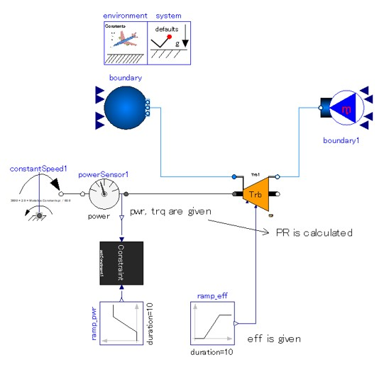

TrbCharFixed00
icon:

convert enthalpy of fluid into mechanical rotational work. Component characteristics are fixed or given by external real-signal.
Scope/Calculation function
- Calculation of the change in state quantities of fluid through turbine.
- Calculation of power or torque obtained for given pressure ratio.
- Calculation of pressure ratio as a result of extracted shaft power or torque.
Short description of physical model/calculation method
- Fluid outlet state quantities are calculated from inlet state quantities, pressure ratio adiabatic efficiency.
- Causality about power can be selected
- Give power/torque extracted -> Pressure ratio of expansion is calculated. (may be common usage)
- Give pressure ratio -> power and torque extracted are calculated .
- Pressure ratio and adiabatic efficiency can be input by either parameter or real-input interface.

Limitations/Assumptions of model
- No flow capacity model. The mass flow rate must be determined outside of this turbine component.
- Mechanical rotational speed must be determined out of this component.
- No phase change of fluid can occur.
- Simulation of abnormal operation where turbine operated as if compressor (possible in windmilling jet engine in flight) or 0 change in fluid pressure cannot be performed.
- Flow reversal condition cannot be simulated.
Interface

Parameters
Read the descriptions on parameter window in model for details of each parameter. This section only covers parameters which requires descriptions by figures/drawings.
Usage
- Redeclear the package of medium.
- Fill following connectors:
- fluid ports, _1 and _2.
- flange connectors, _1 and _2.
- Decide how to determine pressure ratio.
- Pressure ratio is input; power and torque are calculated.
- Provide pressure ratio as parameter.
- Set switchDetermine_PR= "param" (parameter window)
- Set pressure ratio value, "PR". (parameter window)
- Provide pressure ratio via real input port.
- Set switchDetermine_PR= "viaRealInput" (parameter window)
- Fill connector, u_PR
- Pressure ratio is calculated; torque/shaft are given.
- Set switchDetermine_PR= "asCalculated" (parameter window)
- Decide how to determine adiabatic efficiency.
- Provide adiabatic efficiency as parameter.
- Set switchDetermine_eff= "param" (parameter window)
- Set pressure adiabatc efficiency, "eff". (parameter window)
- Provide adiabatic efficiency via real input port.
- Set switchDetermine_eff= "viaRealInput" (parameter window)
- Fill connector, u_eff
Warning/Causions
None
Demo models
PropulsionSystem.Examples.Elements.BasicElements.TrbCharFixed00_ex01

PropulsionSystem.Examples.Elements.BasicElements.TrbCharFixed00_ex02

PropulsionSystem.Examples.Elements.BasicElements.Cmp_and_Trb_ex01

PropulsionSystem.Examples.Elements.BasicElements.Cmp_and_Trb_ex02

Equations in details
***** under construction *****
Back to index page